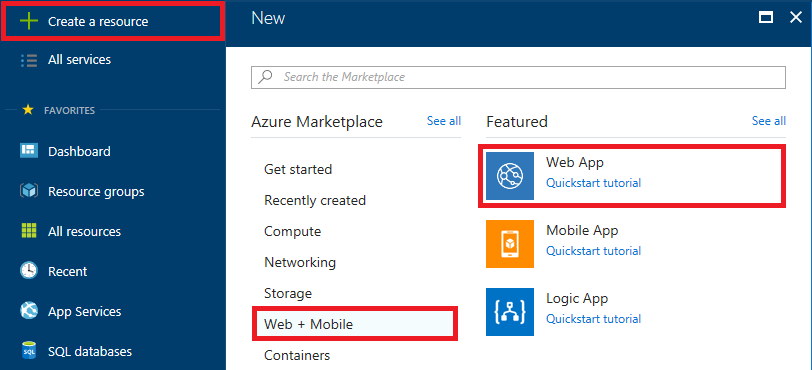

Azure Storage and Cognitive Services
Overview
Microsoft Azure Storage is a set of services that allows you to store large volumes of data in a cost-effective manner and in a way that makes the data readily and reliably available to services and applications that consume it. Data committed to Azure Storage can be stored in blobs, tables, queues, or files. Azure blobs are ideal for storing images, videos, and other types of data, and are frequently used to provide input to and capture output from other Azure services such as Azure Stream Analytics. Azure tables provide NoSQL storage for semi-structured data. Azure queues support queued message transfers between applications (or parts of applications) and can be used to make applications more scalable and robust by loosely coupling them together. Finally, Azure Files use the Server Message Block (SMB) protocol to share files through the cloud and access storage as network drives.
Data stored in Microsoft Azure Storage can be accessed over HTTP or HTTPS using straightforward REST APIs, or it can be accessed using rich client libraries available for many popular languages and platforms, including .NET, Java, Android, Node.js, PHP, Ruby, and Python. The Azure Portal includes features for working with Azure Storage, but richer functionality is available from third-party tools, many of which are free and some of which work cross-platform.
In this lab, you will use Visual Studio Code to write a Node.js Web site that accepts images uploaded by users and stores the images in Azure blob storage. You will learn how to read and write blobs in Node.js, and how to use blob metadata to attach additional information to the blobs you create. You will also get first-hand experience using Microsoft Cognitive Services, a set of intelligence APIs for building smart applications. Specifically, you'll submit each image uploaded by the user to Cognitive Services' Computer Vision API to generate a caption for the image as well as search metadata describing the contents of the image and an image thumbnail. And you will discover how easy it is to deploy apps to the cloud using Git and Visual Studio Code.
Objectives
In this hands-on lab, you will learn how to:
- Create a storage account and storage containers using the Azure Portal
- Write a Node.js app in Visual Studio Code and deploy it to Azure using Git
- Read and write blobs and attach metadata to them
- Use the Computer Vision API to extract information from images and generate thumbnails
- Use the cross-platform Microsoft Azure Storage Explorer to work with Azure Storage
Prerequisites
The following are required to complete this hands-on lab:
Resources
Click here to download a zip file containing the resources used in this lab. Copy the contents of the zip file into a folder on your hard disk.
Exercises
This hands-on lab includes the following exercises:
Estimated time to complete this lab: 60 minutes.
Exercise 1: Create a storage account
The Azure Portal allows you to perform basic storage operations such as creating storage accounts, creating containers, and managing access keys. In this exercise, you will use the portal to create a storage account. Then you'll create a pair of containers: one to store images uploaded by the user, and another to store image thumbnails generated from the uploaded images.
Open the Azure Portal in your browser. If you are asked to log in, do so using your Microsoft account.
The first step in using Azure Storage is to create a storage account. To create a storage account, click + Create a resource in the ribbon on the left. Then click Storage, followed by Storage account.

Creating a storage account
In the ensuing "Create storage account" blade, enter a name for the new storage account in Name field. The name is important, because it forms one part of the URL through which blobs created under this account are accessed.
Storage account names can be 3 to 24 characters in length and can only contain numbers and lowercase letters. In addition, the name you enter must be unique within Azure. If someone else has chosen the same name, you'll be notified that the name isn't available with a red exclamation mark in the Name field.
Once you have a name that Azure will accept (as indicated by the green check mark in the Name field), make sure Resource manager is selected as the deployment model and General purpose is selected as the account kind. Then select Create new under Resource group and type "IntellipixResourceGroup" (without quotation marks) into the box below to name the new resource group that will be created for the storage account. Finish up by selecting the location nearest you in the Location box, and clicking the Create button at the bottom of the blade to create the new storage account.

Specifying parameters for a new storage account
Once the storage account has been created, click Resource groups in the ribbon on the left. Then click the "IntellipixResourceGroup" resource group, and in the blade that opens for the resource group, click the storage account you just created.

Opening the new storage account
In the blade for the storage account, click Blobs to view a list of containers associated with this account.

Viewing blob containers
The storage account currently has no containers. Before you can create a blob, you must create a container to store it in. Click + Container to create a new container. Type "photos" (without quotation marks) into the Name field and select Blob as the Access type. Then click OK to create a container named "photos."
By default, containers and their contents are private. Selecting Blob as the access type makes the blobs in the "photos" container publicly accessible, but doesn't make the container itself public. This is what you want since the images stored in the "photos" container will be linked to from a Web app.

Creating a "photos" container
Repeat this process to create a container named "thumbnails," once more ensuring that the container's Access type is set to Blob.
Confirm that both containers appear in the list of containers for this storage account, and that the names are spelled correctly.

The new containers
Click Access keys in the menu on the left side of the storage-account blade, and then click the Copy button next to KEY for key1. Paste this access key into your favorite text editor for later use.

Copying the access key
You have now created a storage account to hold images uploaded to the app you're going to build, and containers to store the images in. Note that you could create these containers from within the app. Whether to create them programmatically or create them as part of the provisioning process is a choice that's left up to app developers.
Exercise 2: Run the Microsoft Azure Storage Explorer
The Microsoft Azure Storage Explorer is a free tool that provides a graphical interface for working with Azure Storage on PCs running Windows, macOS, and Linux. It provides most of the same functionality as the Azure Portal. It also offers features the portal does not, such as the ability to view blob metadata. In this exercise, you will use the Microsoft Azure Storage Explorer to view the containers you created in Exercise 1.
Start Storage Explorer. If you are asked to log in, do so using your Microsoft account — the same one that you used to log in to the Azure Portal. If you are not asked to log in and don't see the storage account you created in the previous exercise in Storage Explorer's left pane, click the Azure Accounts settings button highlighted below, click Add an account, and log in with your Microsoft account.

Adding an account to Storage Explorer
Confirm that the storage account you created in Exercise 1 appears in the list of storage accounts shown in Storage Explorer. Click the small arrow next to the storage account to display its contents, and then click the arrow next to Blob Containers. Confirm that the containers you created in Exercise 1 appear in the list of containers.

Blob containers in the Microsoft Azure Storage Explorer
The containers are currently empty, but that will change once your app is deployed and you start uploading photos. Having Storage Explorer installed will make it easy for you to see what your app writes to blob storage.
Exercise 3: Get a subscription key for the Computer Vision API
Microsoft Cognitive Services is a set of intelligence APIs that you can call from your apps. Among the more than 25 APIs it offers are the Computer Vision API for distilling actionable information from images, the Emotion API for recognizing emotion in images and video, and the Text Analytics API for extracting sentiments and other information from text (for example, Twitter feeds). These APIs make it possible to build smart apps that would have been impossible just a few short years ago. And they're available for you to begin using today.
In this exercise, you will acquire a subscription key allowing you to call the Computer Vision API from your code. You'll use this key in a later exercise to generate thumbnails from the images uploaded to the Web site, and to generate captions and search keywords for the images.
In the Azure Portal, click + Create a resource, followed by AI + Cognitive Services and Computer Vision API.

Creating a new Computer Vision API subscription
Enter "VisionAPI" into the Name box and select F0 as the Pricing tier. Under Resource Group, select Use existing and select the "IntellipixResourceGroup" that you created in Exercise 1. Check the I confirm box, and then click Create.

Subcribing to the Computer Vision API
Return to the blade for the "IntellipixResourceGroup" resource group and click the Computer Vision API subscription that you just created.

Opening the Computer Vision API subscription
Copy the URL under Endpoint into your favorite text editor so you can easily retrieve it later. Then click Show access keys.

Viewing the access keys
Click the Copy button to the right of KEY 1 to copy the access key to the clipboard. Then paste the key into your favorite text editor so you can retrieve it later.

Copying the access key
The access key that you just copied will be included in each HTTPS request sent to the Computer Vision API so Azure can verify that the caller is authorized. You should protect this access key the same way you protect access keys for storage accounts and other Azure resources.
Exercise 4: Create a photo-upload app
In this exercise, you will create a new Web app in Visual Studio Code and add code to upload images, write them to blob storage, display them in a Web page, generate thumbnails, captions, and keywords using the Computer Vision API, and perform keyword searches on uploaded images. The app will be named Intellipix (for "Intelligent Pictures") and will be accessed through your browser. The server-side code will be written in JavaScript and Node.js. The code that runs in the browser will be written in JavaScript and will leverage two of the most popular class libraries on the planet: AngularJS and Bootstrap.
Open a Command Prompt window if you're using Windows, or a Terminal window if you're using macOS or Linux. Then execute the following command, substituting the Computer Vision API key you copied to the clipboard in the previous exercise for vision_api_key:
Windows:
set AZURE_VISION_API_KEY=vision_api_key
Mac or Linux:
export AZURE_VISION_API_KEY=vision_api_key
Storing sensitive values such as API keys in environment variables prevents you from having to embed them in your code, where a determined intruder could find them and use them. When you deploy the app to the cloud, these values will be stored in Azure and never exposed to the end user or transmitted over the wire.
Next, execute the following command, substituting the name of the storage account you created in Exercise 1 for storage_account_name:
Windows:
set AZURE_STORAGE_ACCOUNT=storage_account_name
Mac or Linux:
export AZURE_STORAGE_ACCOUNT=storage_account_name
Now type the following command, replacing storage_account_key with the access key that you saved in Exercise 1, Step 9:
Windows:
set AZURE_STORAGE_ACCESS_KEY=storage_account_key
Mac or Linux:
export AZURE_STORAGE_ACCESS_KEY=storage_account_key
Create a project directory named "Intellipix" in the location of your choice. In the Command Prompt or Terminal window, navigate to that directory and execute the following command (note the space and the period at the end of the command) to start Visual Studio Code in that directory:
code .
In Visual Studio Code, click the Source Control button in the activity bar on the left.

The Git button in Visual Studio Code
Click Initialize Repository to initialize a Git repository in the working directory and place the directory under source control.

Initializing a Git repository
Return to the Command Prompt or Terminal window and make sure you're still in the "Intellipix" directory that you created for the project (the directory that was just placed under source control). Then execute the following command to initialize the project. If prompted for an author name, enter your name.
npm init -y
Now execute the following command to install the NPM packages that the app will use:
npm install -save azure-storage express multer request streamifier
azure-storage is Microsoft's Azure Storage Client Library for Node.js. It provides convenient JavaScript APIs for accessing blob storage, table storage, and more.
Return to Visual Studio Code and click the Explorer button in the upper-left corner. Then click package.json to open that file for editing.

Opening package.json for editing
Add the following statements to package.json just before the "keywords" definition. Then save your changes.
"engines": {
"node": ">=4.0"
},
Place the mouse cursor over "INTELLIPIX" in the Explorer window and click the New File button to add a file to the project root. Name the new file .gitignore. Be sure to include the leading period in the file name.

Adding a file
Add the following statements to .gitignore to exclude the specified directories from source control:
.vscode/
node_modules/
Add a file named server.js to the root of the project and insert the following statements:
var express = require('express');
var multer = require('multer');
var azureStorage = require('azure-storage');
var streamifier = require('streamifier');
var request = require('request');
var portNum = process.env.PORT || 9898;
var endpoint = 'vision_api_endpoint';
var app = express();
var storage = multer.memoryStorage();
var uploadImage = multer({ storage: storage }).single('imageFile');
app.post('/api/image-upload', configurationMiddleware, uploadImage, imageHandlerMiddleware);
app.get('/api/images', configurationMiddleware, noCacheMiddleware, listBlobsMiddleware);
app.use('/', express.static('src'));
app.use(errorHandlerMiddleware);
app.listen(portNum, function() {
console.log("Web application listening on port " + portNum);
});
function configurationMiddleware(req, res, next) {
var verifyConfigValue = function(keyName) {
var configValue = process.env[keyName];
if(!configValue) {
throw new Error(keyName + " not defined.");
}
return configValue;
};
req.appConfig = {
storageAccount: verifyConfigValue("AZURE_STORAGE_ACCOUNT"),
storageAccountAccessKey: verifyConfigValue("AZURE_STORAGE_ACCESS_KEY"),
visionApiKey: verifyConfigValue("AZURE_VISION_API_KEY")
};
next();
}
function imageHandlerMiddleware(req, res) {
// Note, all of this work is done in memory!!
var cfg = req.appConfig;
var uploadFile = req.file;
var blobService = azureStorage.createBlobService(cfg.storageAccount, cfg.storageAccountAccessKey);
var publicUrl = [
"https://",
cfg.storageAccount,
".blob.core.windows.net/photos/",
uploadFile.originalname
].join('');
console.log(["Received ", uploadFile.originalname, " (", uploadFile.size, " bytes)"].join(''));
saveImageToAzure(uploadFile);
function saveImageToAzure() {
blobService.createBlockBlobFromStream(
'photos',
uploadFile.originalname,
streamifier.createReadStream(uploadFile.buffer),
uploadFile.size,
function(err, result, response) {
if(err){
throw err;
}
console.log(["Uploaded ", uploadFile.originalname, " image to 'photos' container on Azure."].join(''));
console.log(["URL: ", publicUrl].join(''));
createThumbnailOfImage();
});
}
function createThumbnailOfImage(){
var options = {
url: endpoint + "/generateThumbnail",
qs: {
width: 192,
height: 128,
smartCropping: true
},
method: 'POST',
headers: {
'Content-Type': 'application/json',
'Ocp-Apim-Subscription-Key': cfg.visionApiKey
},
json: true,
body: {
url: publicUrl
}
};
request(options)
.on('error', function(err) {
throw err;
})
.on('end', function() {
console.log(["Created ", uploadFile.originalname, " thumbnail."].join(''));
})
.pipe(saveThumbnailToAzure());
}
function saveThumbnailToAzure() {
return blobService
.createWriteStreamToBlockBlob('thumbnails', uploadFile.originalname)
.on('error', function(err) {
throw err;
})
.on('end', function() {
console.log(["Uploaded ", uploadFile.originalname, " image to 'thumbnails' container on Azure."].join(''));
analyzeImage();
});
}
function analyzeImage() {
var options = {
url: endpoint + "/analyze",
qs: {
visualFeatures: "Description"
},
method: 'POST',
headers: {
'Content-Type': 'application/json',
'Ocp-Apim-Subscription-Key': cfg.visionApiKey
},
json: true,
body: {
url: publicUrl
}
};
request(options, function(err, response, body) {
if(err) {
throw err;
}
console.log(["Analyzed ", uploadFile.originalname].join(''));
saveAnalysisResults(body);
});
}
function saveAnalysisResults(result) {
var metaData = {
caption: result.description && result.description.captions && result.description.captions.length ?
result.description.captions[0].text :
"Unknown",
tags: result.description && result.description.tags && result.description.tags.length ?
JSON.stringify(result.description.tags) :
[]
};
blobService.setBlobMetadata(
'photos',
uploadFile.originalname,
metaData,
function(err, result, response) {
if(err){
throw err;
}
console.log(["Stored ", uploadFile.originalname, " analysis results to Azure."].join(''));
res.status(200).send({
name: uploadFile.originalname,
mimetype: uploadFile.mimetype,
result: result
});
});
}
}
function listBlobsMiddleware(req, res) {
var cfg = req.appConfig;
var blobService = azureStorage.createBlobService(cfg.storageAccount, cfg.storageAccountAccessKey);
var options = {
maxResults: 5000,
include: "metadata",
};
blobService.listBlobsSegmented(
'photos',
null,
options,
function(err, result, response) {
if(err) {
throw err;
}
(result.entries || []).forEach(function(entry) {
entry.url = [
"https://",
cfg.storageAccount,
".blob.core.windows.net/thumbnails/",
entry.name
].join("");
entry.fullUrl = [
"https://",
cfg.storageAccount,
".blob.core.windows.net/photos/",
entry.name
].join("");
entry.metadata = entry.metadata || {};
});
res.status(200).json(result);
}
)
}
function noCacheMiddleware(req, res, next) {
res.header('Cache-Control', 'private, no-cache, no-store, must-revalidate');
res.header('Expires', '-1');
res.header('Pragma', 'no-cache');
next();
}
function errorHandlerMiddleware(err, req, res, next) {
console.error(err);
res.status(500).send({
error: true,
message: err.toString()
});
}
This is the code that executes in Node.js on the server. Points of interest include the saveImageToAzure function, which saves an uploaded image in blob storage using APIs in the Azure Storage Client Library for Node.js, the createThumbnailFromImage function, which uses the Computer Vision API to generate an image thumbnail, and the analyzeImage function, which uses the Computer Vision API to generate a caption and a list of keywords describing the image. Another function you might care to inspect is saveAnalysisResults, which writes the caption and keywords to blob metadata. Finally, take a moment to examine the listBlobsMiddleware function, which enumerates the photos uploaded to the site by enumerating the blobs in the "photos" container.
Replace vision_api_endpoint on line 8 with the Computer Vision API endpoint that you saved in Exercise 3, Step 4.
Place the mouse cursor over "INTELLIPIX" in Visual Studio Code's Explorer window and click the New Folder button that appears. Name the new folder "src" (without quotation marks).

Adding a folder
Right-click (on a Mac, Command-click) the "src" folder and use the New File command to add a file named index.html to the "src" folder. Then insert the following statements into index.html:
<!DOCTYPE html>
<html lang="en" ng-app="myApp">
<head>
<meta charset="utf-8">
<meta http-equiv="X-UA-Compatible" content="IE=edge">
<meta name="viewport" content="width=device-width, initial-scale=1">
<title>Intellipix</title>
<link href="https://cdnjs.cloudflare.com/ajax/libs/twitter-bootstrap/3.3.6/css/bootstrap.min.css" rel="stylesheet">
<style>
.ng-cloak { display: none !important; }
a img {
cursor: pointer;
}
.image-modal img {
width: 100%;
}
</style>
</head>
<body class="ng-cloak">
<div class="container body-content" ng-controller="mainCtrl as ctrl">
<h1>Intellipix</h1>
<!-- Panel containing image-upload and search controls -->
<div class="well">
<form ng-if="!ctrl.analysis.inProgress">
<div class="row">
<div class="col-md-7">
<div class="form-group">
<label for="imageFile">Select Image to Analyze:</label>
<input type="file" id="imageFile" name="imageFile" on-file-selected="ctrl.imageFileSelected(file)">
</div>
</div>
<div class="col-md-5">
<div class="form-group">
<label for="searchText">Search:</label>
<div class="input-group">
<input type="text" id="searchText" ng-model="ctrl.searchText" class="form-control">
<span class="input-group-btn">
<button class="btn btn-default" type="button" ng-click="ctrl.clearSearchText()">
<span class="glyphicon glyphicon-remove" aria-hidden="true"></span>
</button>
</span>
</div>
</div>
</div>
</div>
</form>
<p ng-if="ctrl.analysis.inProgress">
<span class="glyphicon glyphicon-time" aria-hidden="true"></span>
Analyzing Image ...
</p>
</div>
<!-- Panel showing error message if upload or image analysis fails -->
<div class="alert alert-danger alert-dismissible" role="alert" ng-if="ctrl.analysis.error">
<button type="button" class="close" data-dismiss="alert" aria-label="Close"><span aria-hidden="true">×</span></button>
<span class="glyphicon glyphicon-exclamation-sign" aria-hidden="true"></span>
{{ctrl.analysis.error.message}}
</div>
<!-- Thumbnail images -->
<div class="row">
<div class="col-sm-12">
<a ng-click="ctrl.showImageDetails(img)" ng-repeat="img in ctrl.images | filter:ctrl.imageFilter">
<img ng-src="{{img.url}}" width="192" ng-attr-title={{img.metadata.caption}} style="padding-right: 16px; padding-bottom: 16px">
</a>
</div>
</div>
<!-- Modal window used to show enlarged images -->
<div class="modal fade image-modal" id="imageModal" tabindex="-1" role="dialog" aria-labelledby="myModalLabel">
<div class="modal-dialog modal-lg" role="document">
<div class="modal-content">
<div class="modal-header">
<button type="button" class="close" data-dismiss="modal" aria-label="Close"><span aria-hidden="true">×</span></button>
<h4 class="modal-title" id="myModalLabel">{{ctrl.current.metadata.caption}}</h4>
</div>
<div class="modal-body">
<img ng-src="{{ctrl.current.fullUrl}}">
</div>
</div>
</div>
</div>
</div>
<script src="https://cdnjs.cloudflare.com/ajax/libs/jquery/2.2.4/jquery.min.js"></script>
<script src="https://cdnjs.cloudflare.com/ajax/libs/twitter-bootstrap/3.3.6/js/bootstrap.min.js"></script>
<script src="https://cdnjs.cloudflare.com/ajax/libs/angular.js/1.5.6/angular.min.js"></script>
<script src="index.js"></script>
</body>
</html>
This is the HTML file containing the site's one and only page. It uses Bootstrap's grid layout system to align elements on the page, and it uses AngularJS to make the page dynamic. Notice the ng- attributes such as ng-click and ng-src attached to some of the page's elements, as well as the "mustache" expressions in double curly braces (for example, {{ctrl.current.metadata.caption}}). These attributes and expressions are part of AngularJS and are frequently found in pages that use it.
Add a file named index.js to the "src" folder and insert the following statements:
(function() {
function mainController($http) {
this.$http = $http;
this.analysis = {
inProgress: false
};
this.images = [];
this.current = null;
this.searchText = '';
this.imageFilter = imageFilter.bind(this);
this.loadImageList();
function imageFilter(img) {
var search = this.searchText;
var tags = img && img.metadata && img.metadata.tags;
if(!search || !tags) {
return true;
}
if(containsText(tags, search)) {
return true;
}
return false;
}
}
mainController.prototype = {
clearSearchText: function() {
this.searchText = '';
},
imageFileSelected: function(file) {
var ctrl = this, formData;
ctrl.analysis = {
inProgress: true
};
formData = new FormData();
formData.append('imageFile', file);
ctrl.$http
.post('/api/image-upload', formData, {
transformRequest: angular.identity,
headers: {
'Content-Type': undefined
}
})
.then(function(result) {
ctrl.analysis = {
inProgress: false,
result: result.data
};
ctrl.loadImageList();
})
.catch(function(err) {
ctrl.analysis = {
inProgress: false,
error: err.data || { message: err.statusText }
};
});
},
loadImageList: function() {
var ctrl = this;
ctrl.$http.get('/api/images')
.then(function(result) {
ctrl.images = result.data.entries || [];
})
.catch(function(err) {
alert((err.data && err.data.message) || err.toString());
});
},
showImageDetails: function(img) {
this.current = img;
angular.element("#imageModal").modal();
}
};
function fileContentBinderDirective() {
return {
restrict: 'A',
scope: {
onFileSelected: '&'
},
link: function(scope, element) {
element.on('change', function() {
scope.$apply(function() {
scope.onFileSelected({
file: element[0].files[0]
});
});
});
}
};
}
function containsText(text, search) {
return (text && search) ? (text.toLowerCase().indexOf(search.toLowerCase()) > -1) : false;
}
angular
.module('myApp', [])
.controller('mainCtrl', ['$http', mainController])
.directive('onFileSelected', [fileContentBinderDirective]);
}());
This file contains JavaScript code that runs on the client. Among other things, it provides support for uploading images from the browser, displaying an enlarged version of an image when the image thumbnail is clicked, and filtering the thumbnails shown on the page when the user types in the search box. Much of this is wrapped in an AngularJS controller, which manages the flow of data in an AngularJS application.
Use Visual Studio Code's File -> Save All command to save all of your changes.
Click the Source Control button in the activity bar. Type "First commit" (without quotation marks) into the message box, and then click the Commit button (the check mark) to commit all changes to the local Git repository.

Committing changes to the project
With the code that comprises the app in place and key environment variables initialized with "secrets" such as your storage account key, the next task is to run the app locally and test it in your browser.
Exercise 5: Test the app locally
In this exercise, you will run the app locally in order to test it and familiarize yourself with its features. Running it locally is a simple matter of firing up a Node.js server process to host your server components (in this case, server.js) and pointing your browser to http://localhost:*port*, where port is the port number on which the server process is listening for HTTP requests. server.js listens on port 9898. You can modify that if you would like by changing line 7 in the code.
Return to the Command Prompt or Terminal window and, once more, make sure you're in the "Intellipix" directory that you created for the project. Then execute the following command to start server.js:
node server.js
Open your browser and navigate to http://localhost:9898.
Click the Browse button and upload one of the images in the "photos" directory included in the lab resources. After a few seconds, a thumbnail version of the photo appears on the page:

Intellipix with one photo uploaded
Upload a few more images from the "photos" directory. Confirm that they appear on the page, too:

Intellipix with three photos uploaded
Hover the cursor over one of the image thumbnails. Confirm that a tooltip window appears containing a caption for the image. This is the caption that was generated by the Computer Vision API and stored in blob metadata.

The computer-generated caption
Click the thumbnail to display an enlarged version of the image in a lightbox. Confirm that the computer-generated caption appears at the top of the lightbox. Then dismiss the lightbox.

Lightbox with computer-generated caption
Upload several more photos. Feel free to upload photos of your own, not just the ones provided with the lab.

Intellipix after uploading several images
Type a keyword describing something you see in the images — for example, "river" — into the search box. Search results will vary depending on what you typed and what images you uploaded. But the result should be a filtered list of images — images whose metadata keywords include all or part of the keyword that you typed.

Performing a search
Do a View Source in your browser to view the source for the page. Find the <img> elements representing the image thumbnails. Observe that the URLs assigned to the images refer directly to blobs in blob storage. This is possible because you set the containers' Access type to Blob, which makes the blobs inside them publicly accessible.
What would happen if the containers were private? If you're not sure, try it and see. Temporaily change the "thumbnails" container's Access type to Private in the Azure Portal. Then refresh the Intellipix page in your browser and see what happens.
Return to the Command Prompt or Terminal window and press Ctrl+C to stop the Node server.
Return to the Microsoft Azure Storage Explorer (or restart if it you didn't leave it running) and click the "photos" container under the storage account you created in Exercise 1. The number of blobs in the container should equal the number of photos you uploaded. Double-click one of the blobs to download it and see the image stored in the blob.

Contents of the "photos" container
Open the "thumbnails" container in Storage Explorer. How many blobs do you see there? Open one of the blobs to see what's inside. These are the thumbnail images generated from the image uploads.
Want to see where the metadata generated by the Computer Vision API is being stored? Open the "photos" container again. Right-click any of the blobs in the container and select Properties. In the ensuing dialog, you'll see a list of the metadata attached to the blob. Each metadata item is a key-value pair. The computer-generated caption is stored in the item named "caption," while the keywords generated from the image are stored in a JSON string array named "tags."

Blob metadata
When you're finished, click Cancel to close the Properties dialog.
You're almost finished, but the final and most important step remains. It is time to deploy the app to the cloud.
Exercise 6: Deploy the app to Azure
In this exercise, you will create an Azure Web App and deploy Intellipix to it using Git. Up to now, you have been running the app locally. Azure Web Apps support local Git repositories as deployment sources, which makes it incredibly easy to publish the contents of local Git repositories to Azure. You already have the local repository; it was created in Exercise 4. Now it's just a matter of creating the Web App, providing a few key pieces of information to it, and executing a git push command.
If you have made any changes to the app since committing it at the end of Exercise 4, use Visual Studio Code to commit those changes now.
Open the Azure Portal in your browser. If you are asked to log in, do so using your Microsoft account.
Click + Create a resource, followed by Web + Mobile and Web App.

Creating a new Azure Web App
In the "Web App" blade, enter a name for the Azure Web App. The name must be unique within Azure since it ultimately becomes part of a DNS name, so you will probably need to enter something other than "Intellipix." Select Use existing under Resource Group and select the "IntellipixResourceGroup" resource group that you created for the storage account in Exercise 1. Then click App service plan/Location.

Naming the Azure Web App
In the "App Service plan" blade, click Create New.
Type "IntellipixServicePlan" (without quotation marks) into the App Service plan box and select the location nearest you under Location. Then click Pricing tier to select a pricing tier.

Configuring an App Service plan
In the "Choose your pricing tier" blade, click View All to show all pricing tiers. Scroll down and select the F1 Free pricing tier. Then click the Select button.

Selecting the free pricing tier
Click the OK button at the bottom of the "App Service plan" blade to OK the service plan.
Click the Create button at the bottom of the "Web App" blade to create the Azure Web App.

Creating the Azure Web App
Once the app has deployed (it generally only takes a few seconds), click Resource groups in the ribbon on the left side of the portal, and click the "IntellipixResourceGroup" resource group. Then click the Azure Web App in that resource group (the Web App that you just created).

Selecting the Azure Web App
Click Application settings to view the Web App's application settings.

Viewing the Web App's application settings
Scroll down to the "App settings" section of the blade and add the following key-value pairs:
- AZURE_STORAGE_ACCOUNT – Name of the storage account you created in Exercise 1
- AZURE_STORAGE_ACCESS_KEY – Access key for the storage account (Exercise 1, Step 9)
AZURE_VISION_API_KEY – Subscription key for the Computer Vision API (Exercise 3, Step 5)
Once the settings are entered, click the Save button at the top of the blade to save them.

Specifying application settings
Click Deployment options to configure the deployment source.

Selecting the deployment source
In the "Deployment option" blade, click Choose Source.

Choosing the deployment source
In the "Choose source" blade, click Local Git Repository. Then click OK at the bottom of the "Deployment option" blade.

Choosing a deployment source
Click Deployment credentials.

Selecting the deployment credentials
Enter a user name and password for deploying to Azure. User names may contain letters, numbers, hyphens, and underscores and must start with a letter. Make your password at least 8 characters in length and include a mix of uppercase letters, lowercase letters, and numbers. Remember the user name and password you entered because you will need them when you deploy the app. When you're done, click Save at the top of the blade.

Setting the deployment credentials
Click Properties.

Selecting properties
Scroll down until you find "GIT URL." Then click the Copy button to copy the URL to the clipboard.

Copying the Git URL
Return to the Command Prompt or Terminal window (or open a new one if you closed the last one) and execute the following command to add "azure" as a remote name. Substitute the Git URL on the clipboard for git_url.
git remote add azure git_url
Now use the following command to deploy Intellipix from your local Git repository to Azure. When prompted to enter Git credentials, type the user name and password you specified in Step 17 of this exercise.
git push azure master
After a few moments, you should be greeted with a successful deployment.

Success!
Open your browser and navigate to appname.azurewebsites.net, substituting the name of your Azure Web App for appname (the name you entered in Step 4 of this exercise). Confirm that Intellipix appears in your browser, and that it shows the images you uploaded to it while testing locally. The app is no longer running locally; it's on the Web, where it's reachable by everyone. Congratulations on a successful deployment!

The finished product!
If you make changes to the app and want to push the changes out to the Web, simply commit the changes in Visual Studio Code and execute a git push azure master command again. Of course, you can still test your changes locally before publishing to the Web.
Summary
When you're finished using the site, you should delete the resource group containing it. Deleting the resource group deletes all of the resources inside it (including the storage account, the blobs uploaded to it, and the App Service), removes all traces of this lab from your account, and prevents any further charges from being incurred for it. To delete the resource group, simply open the resource-group blade in the portal and click Delete at the top of the blade. You will be asked to type the resource group's name to confirm that you want to delete it, because once deleted, a resource group can't be recovered.
There is much more that you could do to develop Intellipix and to leverage Azure even further. For example, you could add support for authenticating users and deleting photos, and rather than force the user to wait for Cognitive Services to process a photo following an upload, you could use Azure Functions to call the Computer Vision API asynchronously each time an image is added to blob storage. You could even use Cognitive Services to detect faces in the photos and analyze the emotions depicted by those faces. With the cloud as your platform, the sky is the limit (pun intended).
Copyright 2017 Microsoft Corporation. All rights reserved. Except where otherwise noted, these materials are licensed under the terms of the Apache License, Version 2.0. You may use it according to the license as is most appropriate for your project on a case-by-case basis. The terms of this license can be found in http://www.apache.org/licenses/LICENSE-2.0.